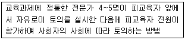
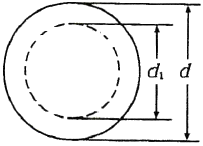
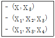
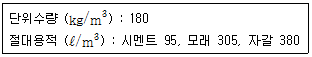
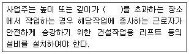

건설안전산업기사 (2017-05-07 기출문제)
1과목: 산업안전관리론
1. 인간의 착각현상 중 버스나 전동차의 움직임으로 인하여 자신이 승차하고 있는 정지된 차량이 움직이는 것 같은 느낌을 받는 현상은?
- 자동운동
- 유도운동
- 가현운동
- 플리커현상
(정답률: 75%)

2. 토의법의 유형 중 다음에서 설명하는 것은?

- 포럼(forum)
- 패널 디스커션(panel discussion)
- 심포지엄(symposium)
- 버즈 세션(buzz session)
(정답률: 68%)
3. 산업안전보건법상 근로자 안전ㆍ보건교육의 기준으로 틀린 것은?
- 사무직 종사 근로자의 정기교육 : 매분기 3시간 이상
- 일용근로자의 작업내용 변경시의 교육 : 1시간 이상
- 관리감독자의 지위에 있는 사람의 정기교육 : 연간 16시간 이상
- 건설 일용근로자의 건설업 기초안전ㆍ보건교육 : 2시간이상
(정답률: 75%)
4. 안전ㆍ보건표지의 기본모형 중 다음 그림의 기본모형의 표시사항으로 옳은 것은?

- 지시
- 안내
- 경고
- 금지
(정답률: 61%)
5. 맥그리거(McGreger)의 X이론의 따른 관리처방 아닌 것은?
- 목표에 의한 관리
- 권위주의적 리더십확립
- 경제적 보상체체의 강화
- 면밀한 감독과 엄격한 통제
(정답률: 67%)
6. 산업안전보건법령상 안전검사 대상 유해ㆍ위험 기계등이 아닌 것은?
- 곤돌라
- 이동식 국소 배기장치
- 산업용 원심기
- 건조설비 및 그 부속설비
(정답률: 70%)
7. 지도자가 추구하는 계획과 목표를 부하직원이 자신의 것으로 받아들여 자발적으로 참여하게 하는 리더십의 권한은?
- 보상적 권한
- 강압적 권한
- 위임된 권한
- 합법적 권한
(정답률: 68%)
8. 안전관리조직의 형태 중 라인ㆍ스탭형에 대한 설명으로 틀린 것은?
- 안전스탭은 안전에 관한 기획ㆍ입안ㆍ조사ㆍ검토 및 연구를 행한다.
- 안전업무를 전문적으로 담당하는 스탭 및 생산라인의 각 계층에도 겸임 또는 전임의 안전담당자를 둔다.
- 모든 안전관리업무를 생산라인을 통하여 직선적으로 이루어지도록 편성된 조직이다.
- 대규모 사업장(1000명 이상)에 효율적이다.
(정답률: 77%)
9. 강의계획에 있어 학습목적의 3요소가 아닌 것은?
- 목표
- 주제
- 학습 내용
- 학습 정도
(정답률: 42%)
10. 학습정도(level of learning)의 4단계 요소가 아닌것은?
- 지각
- 적용
- 인지
- 정리
(정답률: 66%)
11. 부주의의 발생원인과 그 대책이 옳게 연결된 것은?
- 의식의 우회 - 상담
- 소질적 조건 - 교육
- 작업환경 조건 불량 - 작업순서 정비
- 작업순서의 부적당 - 작업자 재배치
(정답률: 76%)
12. 무재해운동 추진기법 중 지적확인에 대한 설명으로 옳은 것은?
- 비평을 금지하고, 자유로운 토론을 통하여 독창적인 아이디어를 끌어낼 수 있다.
- 참여자 전원의 스킨십을 통하여 연대감, 일체감을 조성할 수 있고, 느낌을 교류한다.
- 작업 전 5분간의 미팅을 통하여 시나리오상의 역할을 연기하여 체험하는 것을 목적으로 한다.
- 오관의 감각기관을 총동원하여 작업의 정확성과 안전을 확인한다.
(정답률: 69%)
13. 재해발생의 주요원인 중 불안전한 상태에 해당하지 않는 것은?
- 기계설비 및 장비의 결함
- 부적절한 조명 및 환기
- 작업장소의 정리ㆍ정돈 불량
- 보호구 미착용
(정답률: 69%)
14. 재해손실비의 평가방식 중 시몬즈(R.H. Simonds) 방식에 의한 계산방법으로 옳은 것은?
- 직접비 + 간접비
- 공동비용 + 개별비용
- 보험 코스트 + 비보험 코스트
- (휴업상해건수 × 관련비용 평균치) + (통원상해건수 × 관련비용 평균치)
(정답률: 72%)
15. 비통제의 집단행동 중 폭동과 같은 것을 말하며, 군중보다 합의성이 없고, 감정에 의해서만 행동하는 특성은?
- 패닉(Panic)
- 모브(Mob)
- 모방(Imitation)
- 심리적 전염 (Mental epidemic)
(정답률: 62%)
16. 재해예방의 4원칙에 해당하지 않는 것은?
- 예방가능의 원칙
- 대책선정의 원칙
- 손실우연의 원칙
- 원인추정의 원칙
(정답률: 73%)
17. 보호구 자율안전확인 고시상 사용구분에 따른 보안경의 종류 아닌 것은?
- 차광보안경
- 유리보안경
- 프라스틱보안경
- 도수렌즈보안경
(정답률: 58%)
18. 기업 내 정형교육 중 TWI의 훈련내용이 아닌 것은?
- 작업방법훈련
- 작업지도훈련
- 사례연구훈련
- 인간관계훈련
(정답률: 60%)
19. 어느 공장의 재해율을 조사한 결과 도수율이 20이고, 강도율 1.2로 나타났다. 이 공장에서 근무하는 근로자가 입사부터 정년퇴직할 때까지 예상되는 재해건수(a)와 이로 인한 근로손실 일수(b)는? (단, 이 공장의 1인당 입사부터 정년퇴직 할 때까지 평균 근로시간은 100000시간으로 한다.)
- a = 20, b= 1.2
- a= 2, b= 120
- a = 20, b= 0.12
- a= 120, b = 2
(정답률: 61%)
20. 하인리히의 사고방지 5단계 중 제1단계 안전조직의 내용이 아닌 것은?
- 경영자의 안전목표 설정
- 안전관리자의 선임
- 안전활동의 방침 및 계획수립
- 안전회의 및 토의
(정답률: 59%)
2과목: 인간공학 및 시스템안전공학
21. FT작성 시 논리게이트에 속하지 않는 것은 무엇인가?
- OR 게이트
- 억제 게이트
- AND게이트
- 동등 게이트
(정답률: 74%)
22. 의자의 등받이 설계에 관한 설명으로 가장 적절하지 않은 것은?
- 등받이 폭은 최소 30.5cm가 되게 한다.
- 등받이 높이는 최소 50cm가 되게 한다.
- 의자의 좌판과 등받이 각도는 90~1⑤°를 유지한다.
- 요부받침의 높이는 25~35cm로 하고 폭은 30.5cm로 한다.
(정답률: 61%)
23. 일반적인 인간-기계 시스템의 형태 중 인간이 사용자나 동력원으로 기능하는 것은?
- 수동체계
- 기계화체계
- 자동체계
- 반자동체계
(정답률: 68%)
24. 작업기억과 관련된 설명으로 틀린 것은?
- 단기기억이라고도 한다.
- 오랜 기간 정보를 기억하는 것이다.
- 작업기억 내의 정보는 시간이 흐름에 따라 쇠퇴할 수 있다.
- 리허설(reherarsal)은 정보를 작업기억 내에 유지하는 유일한 방법이다.
(정답률: 72%)
25. 어떤 전자기기의 수명은 지수분포를 따르며, 그 평균 수명이 1000 시간이라고 할 때, 500 시간동안 고장 없이 작동할 확률은 약 얼마인가?
- 0.1353
- 0.3935
- 0.6065
- 0.8647
(정답률: 42%)
26. FT 도에 의한 컷셋(cut set)이 다음과 같이 구해졌을 때 최소 컷셋(minimal cut set)으로 맞는 것은?

- (X1, X3)
- (X1, X2, X3)
- (X1, X3, X4)
- (X1, X2, X3, X4)
(정답률: 66%)
27. 1에서 15까지 수의 집합에서 무작위로 선택할 때, 어떤 숫자가 나올지 알려주는 경우의 정보량은 약몇 bit인가?
- 2.91 bit
- 3.91 bit
- 4.51 bit
- 4.91 bit
(정답률: 58%)
28. 한 사무실에서 타자기의 소리 때문에 말소리가 묻히는 현상을 무엇이라 하는가?
- dBA
- CAS
- phon
- masking
(정답률: 74%)
29. 체계분석 및 설계에 있어서 인간공학의 가치와 가장 거리가 먼 것은?
- 성능의 향상
- 훈련비용의 증가
- 사용자의 수용도 향상
- 생산 및 보전의 경제성 증대
(정답률: 74%)
30. FTA의 용도와 거리가 먼 것은?
- 고장의 원인을 연역적으로 찾을 수 있다.
- 시스템의 전체적인 구조를 그림으로 나타낼 수 있다.
- 시스템에서 고장이 발생할 수 있는 부분을 쉽게 찾을 수 있다.
- 구체적인 초기사건에 대하여 상향식(bottom-up) 접근방식으로 재해경로를 분석하는 정량적 기법이다.
(정답률: 59%)
31. 정보 전달용 표시장치에서 청각적 표현이 좋은 경우가 아닌 것은?
- 메시지 복잡하다.
- 시각장치가 지나치게 많다.
- 즉각적인 행동이 요구된다.
- 메시지가 그 때의 사건을 다룬다.
(정답률: 70%)
32. 보전효과 측정을 위해 사용하는 설비고장 강도율의 식으로 맞는 것은?
- 부하시간 ÷ 설비가동시간
- 총 수리시간 ÷ 설비가동시간
- 설비고장건수 ÷ 설비가동시간
- 설비고장 정지시간 ÷ 설비가동시간
(정답률: 61%)
33. 휘도(luminance)가 10 cd/m2이고, 조도(illuminacec)가 100lx 일 때 반사율(reflectance)(%)은?
- 0.1
- 10
- 100
- 1000
(정답률: 43%)
34. 안전가치분석의 특징으로 틀린 것은?
- 기능위주로 분석한다.
- 왜 비용이 드는가를 분석한다.
- 특정 위험의 분석을 위주로 한다.
- 그룹 활동은 전원의 중지를 모은다.
(정답률: 43%)
35. 산업안전보건법에 따라 상시 작업에 종사하는 장소에서 보통작업을 하고자 할 때 작업면의 최소 조도(lux)로 맞는 것은? (단, 작업장은 일반적으로 작업장소이며, 감광재료를 취급하지 않는 장소이다.)
- 75
- 150
- 300
- 750
(정답률: 58%)
36. 사람의 감각기관 중 반응속도가 가장 느린 것은?
- 청각
- 시각
- 미각
- 촉각
(정답률: 70%)
37. 단일 차원의 시각적 암호 중 구성암호, 영문자암호, 숫자암호에 대하여 암호로서의 성능이 가장 좋은 것부터 배열한 것은?
- 숫자암호 - 영문자암호- 구성암호
- 구성암호 - 숫자암호 - 영문자암호
- 영문자암호 - 숫자암호 - 구성암호
- 영문자암호 - 구성암호 - 숫자암호
(정답률: 60%)
38. 정보처리기능 중 정보보관에 해당되는 것과 관계가 없는 것은?
- 감지
- 정보처리
- 공간
- 행동기능
(정답률: 46%)
39. 시스템 안전 분석기법 중 인적 오류와 그로 인한 위험성의 예측과 개선을 위한 기법은 무엇인가?
- FTA
- ETBA
- THERP
- MORT
(정답률: 67%)
40. 인체 측정치 중 기능적 인체치수에 해당되는 것은?
- 표준자세
- 특정작업에 국한
- 움직이지 않는 피측정자
- 각 지체는 독립적으로 움직임
(정답률: 48%)
3과목: 건설시공학
41. 건축 공사관리에 관한 설명으로 옳지 않은 것은?
- 공사현장의 관리에는 산업안전보건법령의 적용을 받지 않는다.
- 지급재료는 검수 후 도급자가 보관하되 다른 자재와 구분하여 보관한다.
- 정기안전점검은 정해진 시기에 반드시 실시한다.
- 현장에 반입한 재료는 모두 검사를 받아야 하나, KS표준에 의하여 제작된 합격품은 검사를 생략할 수 있다.
(정답률: 76%)
42. 철근가공에 관한 설명으로 옳지 않은 것은?
- D35 이상의 철근은 산소절단기를 사용하여 절단한다.
- 한번 구부린 철근은 다시 펴서 사용해서는 안된다.
- 공장가공은 현장가공에 비해 절단손실을 줄일 수 있다.
- 표준갈고리를 가공할 때에는 정해진 크기 이상의 곡률 반지름을 가져야 한다.
(정답률: 74%)
43. 콘크리트에 관한 설명으로 옳지 않은 것은?
- 진동다짐한 콘크리트의 경우가 그렇지 않은 경우의 콘크리트보다 강도가 커진다.
- 공기연행제는 콘크리트의 시공연도를 좋게 한다.
- 물시멘트비가 커지면 콘크리트의 강도가 커진다.
- 양생온도가 높을수록 콘크리트의 강도발현이 촉진되고 초기강도는 커진다.
(정답률: 69%)
44. 용접작업에서 용접봉을 용접방향에 대하 서로 엇갈리게 움직여서 용가금속을 용착시키는 운봉방법은?
- 단속용접
- 개선
- 레그
- 위빙
(정답률: 79%)
45. 경량콘크리트(LightWeight Concrete)에 관한 설명으로 옳지 않은 것은?
- 기건비중은 2.0 이하, 단위중량은 1400~2000㎏/m3 정도이다.
- 열전도율이 보통 콘크리트와 유사하여 동일한 단열성능을 갖는다.
- 물과 접하는 지하실 등의 공사에는 부적합하다.
- 경량이어서 인력에 의한 취급이 용이하고, 가공도 쉽다.
(정답률: 59%)
46. 철근단면을 맞대고 산소-아세틸렌염으로 가열하여 접합단면을 녹이지 않고 적열상태에서 부풀려 가압, 접합하는 철근이음방식은?
- 나사방식이음
- 겹침이음
- 가스압접이음
- 파워쇼벨
(정답률: 80%)
47. 파헤쳐진 흙을 담아 올리거나 이동하는데 사용하는 기계로 쇼벨, 버킷을 장착한 트랙터 또는 크롤러 형태의 기계는?
- 불도저
- 앵글도저
- 로더
- 파워쇼벨
(정답률: 57%)
48. 콘크리트의 경화 후 거푸집 제거 작업 시 주의사항 중 옳지 않은 것은?
- 진동, 충격 등을 주지 않고 콘크리트가 손상되지. 않도록 순서대로 제거한다.
- 지주를 바꾸어 세울 동안에는 상부의 작업을 제한하여 적재하중을 적게 하고, 집중하중을 받는 부분의 지주는 그대로 둔다.
- 제거한 거푸집은 재사용할 수 있도록 적당한 장소에 정리하여 둔다.
- 구조물의 손상을 고려하여 남은 거푸집 쪽널은 그대로 두고 미장공사를 한다.
(정답률: 79%)
49. 민간자본 유치방식중 사회간접시설을 설계, 시공한 후 소유권을 발주자에게 이양하고, 투자자는 일정기간 동안 시설물의 운영권을 행사하는 계약방식은?
- BOT(Bulid Operate Transfer)
- BTO(Bulid Transfer Operate)
- BOO(Bulid Operate Own)
- BTL (Bulid Transfer Lease)
(정답률: 62%)
50. 연약한 점토질 지반에서 진흙의 점착력을 판별하는 토질시험은?
- 표준관입시험
- 지내력시험
- 슈미트해머시험
- 베인테스트
(정답률: 64%)
51. 무게 63.5㎏의 추를 76cm 높이에서 낙하시켜 샘플러가 30cm 관입하는데 필요한 타격횟수(N)를 측정하는 토질시험의 종류는?
- 전단시험
- 지내력시험
- 표준관입시험
- 베인시험
(정답률: 75%)
52. 입찰방식에 관한 설명으로 옳지 않은 것은?
- 공개경쟁입찰은 관보, 신문, 게시판등에 입찰공고를 하여야 한다.
- 지명경쟁입찰은 경쟁입찰에 의하지 않고 그 공사에 특히 적당하다고 판단되는 1개의 회사를 선정하여 발주하는 방식이다.
- 제한경쟁입찰은 양질의 공사를 위하여 업체자격에 대한 조건을 만족하는 업체라면 입찰에 참가하는 방식이다.
- 부대입찰은 발주자가 입찰참가자에게 하도급할 공종, 하도급 금액 등에 대한 사항을 미리 기재하게 하여 입찰시 입찰서류에 첨부하여 입찰하는 제도이다.
(정답률: 67%)
53. 다음 중 인더피닝 공법이 아닌 것은?
- 2중널말뚝 공법
- 강재말뚝 공법
- 웰 포인트 공법
- 모르타르 및 약액 주입법
(정답률: 65%)
54. 흙을 이김에 따라 약해지는 정도를 표시한 것은?
- 간극비
- 함수비
- 포화도
- 예민비
(정답률: 68%)
55. 콘크리트를 양생하는데 있어서 양생분(養生紛)을 뿌리는 목적으로 옳은 것은?
- 빗물의 침입을 막기 위해서
- 표면의 양생분을 경화시키기 위해서
- 표면에 떠 있는 물을 양생분으로 제거하기 위해서
- 혼합수(混合水)의 증발을 막기 위해서.
(정답률: 58%)
56. V.E(Value Engineerining)에서 원가절감을 실현할 수 있는 대상 선정이 잘못 된 것은?
- 수량이 많은 것
- 반복효과가 큰 것
- 장시간 사용으로 숙달되어 개선효과가 큰 것
- 내용이 간단한 것.
(정답률: 60%)
57. 보통의 철근콘크리트 구조에서 콘크리트 1m3당 필요한 거푸집의 개략 면적으로 가장 적당한 것은?
- 1~2 m2
- 3~4 m2
- 6~8 m2
- 15~16 m2
(정답률: 46%)
58. 거푸집 측압에 영향을 주는 요인과 거리가 먼 것은?
- 기온
- 콘크리트 강도
- 콘크리트의 슬럼프
- 콘크리트 타설 높이
(정답률: 69%)
59. 철골공사에서 철골세우기 계획을 수립할 때 철골제작공장과 협의해야 할 사항이 아닌 것은?
- 철골 세우기 검사 일정 확인
- 반입 시간의 확인
- 반입 부재수의 확인
- 부재 반입의 순서
(정답률: 67%)
60. 공정계획에 관한 설명으로 옳지 않은 것은?
- 지정된 공사기간 안에 완성시키기 위한 통제수단이다.
- 사업성과 원가관리와는 관계는 없다.
- 공정표의 종류는 횡선식공정표, 네트워크 공정표 등이 있다.
- 우기와 혹한기 명절 등은 공정계획 시 반영한다.
(정답률: 74%)
4과목: 건설재료학
61. 유리 섬유를 불규칙하게 혼입하고 상온 가압하여 성형한 판으로 설비재ㆍ내외수장재로 쓰이는 것은?
- 멜라민 치장판
- 폴리에스테르 강화판
- 아크릴 평판
- 염화비닐판
(정답률: 53%)
62. 석고보드공사에 관한 설명으로 옳지 않은 것은?
- 석고보드는 두께 9.5mm 이상의 것을 사용한다.
- 목조 바탕의 띠장 간격은 200mm 내외로 한다.
- 경량철골 바탕의 칸막이벽 등에서는 기둥, 샛기둥의 간격을 450mm 내외로 한다.
- 석고보드용 평머리못 및 기타 설치용 철물은 용융 아연 도금 또는 유니크롬 도금이 된 것으로 한다.
(정답률: 49%)
63. 목재에 관한 설명으로 옳지 않은 것은?
- 석재나 금속에 비하여 손쉽게 가공할 수 있다.
- 다른 재료에 비하여 열전도율이 매우 크다.
- 건조한 것은 타기 쉬우며 건조가 불충분한 것은 썩기 쉽다.
- 건조재는 전기의 불량 도체이지만 함수율이 커질수록 전기전도율 증가한다.
(정답률: 68%)
64. 최근 에너지저감 및 자연친화적인 건축물의 확대 정책에 따라 에너지저감, 유해물질저감, 자원의 재활용, 온실가스 감축 등을 유도하기 위한 건설 자재 인증제도와 거리가 먼 것은?
- 환경표지 인증제도
- GR(Good Recycle) 인증제도
- 탄소성적표지 인증제도
- GD(Good Design)마크 인증제도
(정답률: 72%)
65. 화재 시 유리가 파손되는 원인과 관계가 적은 것은
- 열팽창 계수가 크기 때문이다.
- 급가열시 부분적 면내(面內)온도차가 커지기 때문이다.
- 응용온도가 낮아 녹기 때문이다.
- 열전도율이 작기 때문이다.
(정답률: 53%)
66. 알루미늄창호의 특징에 관한 설명으로 옳지 않은 것은?
- 알칼리성에 강하다.
- 비중이 철의 1/3정도이다.
- 이종 금속과 접촉하면 부식된다.
- 강성이 적고 열에 의한 팽창. 수축이 크다.
(정답률: 69%)
67. 콘크리트의 배합설계시 표준이 되는 골재의 상태는?
- 절대건조상태
- 기건상태
- 표면건조 내부포화상태
- 습윤상태
(정답률: 58%)
68. 철근콘크리트 1m3 무게는 대략 얼마 정도인가?
- 1t
- 2t
- 2.4t
- 3t
(정답률: 64%)
69. 돌로마이트 플라스터(dolomite plaster)에 관한 설명으로 옳지 않은 것은?
- 점성이 커서 풀이 필요 없다.
- 수경성 미장재료에 해당된다.
- 회반죽에 비해 조기강도가 크다.
- 냄새, 곰팡이가 없어 변색될 염려가 없다.
(정답률: 56%)
70. 미장재료인 회반죽을 혼합할 때 소석회와 사용되는 것은?
- 카세인
- 아교
- 목섬유
- 해초풀
(정답률: 76%)
71. 콘크리트의 건조수축 시 발생하는 균열을 보완, 개선하기 위하여 콘크리트 속에 다량의 거품을 넣거나 기포를 발생시키기 위해 첨가하는 혼화재는?
- 고로슬래그
- 플라이애쉬
- 실리카 흄
- 팽창재
(정답률: 61%)
72. 시멘트를 저장할 때의 주의사항 중 옳지 않은 것은?
- 쌓을 때 너무 압축력을 받지 않게 13포대 이내로 한다.
- 통풍을 좋게 한다.
- 3개월 이상된 것은 재시험하여 사용한다.
- 저장소는 방습구조로 한다.
(정답률: 63%)
73. 다음은 특정 콘크리트의 절대용적배합을 나타낸 것이다. 이 콘크리트의 물시멘트비는? (단, 시멘트의 밀도는 3.15g/cm3이다.)

- 50%
- 55%
- 60%
- 65%
(정답률: 58%)
74. 화재 시 개구부에서의 연소(筵蔬)를 방지하는 효과가 있는 유리는?
- 망입유리
- 접합유리
- 열선흡수유리
- 열선반사유리
(정답률: 57%)
75. 점토 제품 중 흡수성이 가장 작은 것은?
- 도기류
- 토기류
- 자기류
- 석기류
(정답률: 69%)
76. 점토제품으로 소성온도가 가장 높은 것은?
- 도기
- 토기
- 자기
- 석기
(정답률: 64%)
77. 방사선 차단성이 가장 큰 금속은?
- 납
- 알루미늄
- 동
- 주철
(정답률: 72%)
78. 인조석 및 석재가공제품에 관한 설명으로 옳지 않은 것은?
- 테라죠는 대리석, 사문암 등의 종석을 백색시멘트나 수로 결합시키고 가공하여 생산한다.
- 에보나이트는 주로 가구용 테이블 상판, 실내벽면 등에 사용된다.
- 초경량 스톤패널은 로비(lobby) 및 엘리베이터의 내장재 등으로 사용된다.
- 패블스톤은 조약돌의 질감을 내지만 백화현상의 우려가 있다.
(정답률: 53%)
79. 다음 중 목재의 건조법이 아닌 것은?
- 주입건조법
- 공기건조법
- 증기건조법
- 송풍건조법
(정답률: 50%)
80. 다음 중 마루판으로 사용되지 않는 것은?
- 플로팅 보드
- 파키트리 패널
- 파키트리 블록
- 코펜하겐 리브
(정답률: 77%)
5과목: 건설안전기술
81. 토류벽에 거치된 어스 앵커의 인장력을 측정하기 위한 계측기는?
- 하중계(Load cell)
- 변형계(Strain gauge)
- 지하수위계(Piezometer)
- 지중경사계(Inclinometer)
(정답률: 56%)
82. 달비계에 사용하는 와이어로프는 지름 감소가 공칭지름의 몇 %를 초과할 경우에 사용할 수 없도록 규정되어 있는가?
- 5%
- 7%
- 9%
- 10%
(정답률: 55%)
83. 다음셔블계 굴착장비 중 좁고 깊은 굴착에 가장 적합한 장비는?
- 드래그라인(dragline)
- 파워셔블(power shovel)
- 백호(back hoe)
- 클램쉘(clam shell)
(정답률: 65%)
84. 건설업 산업안전보건관리비 계상 및 사용기준을 적용하는 공사금액 기준으로 옳은 것은? (단, 「산업재해보상보험법」제6조에 따라「산업재해보상보험법」의 적용을 받는 공사)(관련 규정 개정전 문제로 여기서는 기존 정답인 2번을 누르면 정답 처리됩니다. 자세한 내용은 해설을 참고하세요.)
- 총공사금액 2천만원 이상인 공사
- 총공사금액 4천만원 이상인 공사
- 총공사금액 6천만원 이상인 공사
- 총공사금액 1억원 이상인 공사
(정답률: 56%)
85. 건설작업용 리프트에 대하여 바람에 의한 붕괴를 방지하는 조치를 한다고 할 때 그 기준이 되는 풍속은?
- 순간 풍속 30m/sec 초과
- 순간 풍속 35m/sec 초과
- 순간 풍속 40m/sec 초과
- 순간 풍속 45m/sec 초과
(정답률: 54%)
86. 거푸집 해체 시 작업자가 이행해야 할 안전수칙으로 옳지 않은 것은?
- 거푸집 해체는 순서에 입각하여 실시한다.
- 상하에서 동시작업을 할 때는 상하의 작업자가 긴밀하게 연락을 취해야 한다.
- 거푸집 해체가 용이하지 않을 때에는 큰 힘을 줄 수 있는 지렛대를 사용해야 한다.
- 해체된 거푸집, 각목 등을 올리거나 내릴 때는 달줄, 달포대 등을 사용한다.
(정답률: 61%)
87. 추락방지망의 달기로프를 지지점에 부착할 때 지지점의 간격이 1.5m인 경우 지지점의 강도는 최소 얼마 이상이어야 하는가? (단, 연속적인 구조물 방망 지지점인 경우)
- 200㎏
- 300㎏
- 400㎏
- 500㎏
(정답률: 53%)
88. 철근의 인력 운반 방법에 관한 설명으로 옳지 않은 것은?
- 긴 철근은 두 사람이 1조가 되어 같은 쪽의 어깨에 메고 운반한다.
- 양끝은 묶어서 운반한다.
- 1회 운반 시 1인당 무게는 50㎏ 정도로 한다.
- 공동작업 시 신호에 따라 작업한다.
(정답률: 70%)
89. 차량계 건설기계의 작업계획서 작성 시 그 내용에 포함되어야 할 사항이 아닌 것은?
- 사용하는 차량계 건설기계의 종류 및 성능
- 차량계 건설기계의 운행 경로
- 차량계 건설기계에 의한 작업방법
- 브레이크 및 클러치 등의 기능 점검
(정답률: 63%)
90. 강관비계의 구조에서 비계기둥간의 최대 허용 적재 하중으로 옳은 것은?
- 500㎏
- 400㎏
- 300㎏
- 200㎏
(정답률: 64%)
91. 지반의 조사방법 중 지질의 상태를 가장 정확히 파악할 수 있는 보링방법은?
- 충격식 보링 (percussion boring)
- 수세식 보링 (wash boring)
- 회전식 보링 (rotary boring)
- 오거 보링 (auger boring)
(정답률: 60%)
92. 추락에 의한 위험방지와 관련된 승강설비의 설치에 관한 사항이다. ( )에 들어갈 내용으로 옳은 것은?

- 1.0m
- 1.5m
- 2.0m
- 2.5m
(정답률: 72%)
93. 작업에서의 위험요인과 재해형태가 가장 관련이 적은 것은?
- 무리한 자재적재 및 통로 미확보 → 전도
- 개구부 안전난간 미설치 → 추락
- 벽돌 등 중량물 취급 작업 → 협착
- 항만 하역 작업 → 질식
(정답률: 70%)
94. 산업안전보건관리비 중 안전 시설비의 항목에서 사용할 수 있는 항목에 해당하는 것은?
- 외부인 출입금지, 공사장 경계표시를 위한 가설울타리
- 작업발판
- 절토부 및 성토부 등의 토사유실 방지를 위한 설비
- 사다리 전도방지장치
(정답률: 59%)
95. 다음 중 차랑계 건설기계에 속하지 않는 것은?
- 배쳐플랜트
- 모터그레이더
- 크롤러드릴
- 탠덤롤러
(정답률: 52%)
96. 사다리식 통로로 설치할 때 사다리의 상단은 걸쳐 놓은 지점으로부터 최소 얼마 이상 올라가도록 하여야 하는가?
- 45cm 이상
- 60cm 이상
- 75cm 이상
- 90cm 이상
(정답률: 68%)
97. 콘크리트 측압에 관한 설명으로 옳지 않은 것은?
- 대기의 온도가 높을수록 크다.
- 콘크리트의 타설속도가 빠를수록 크다.
- 콘크리트의 타설높이가 높을수록 크다.
- 배근된 철근량이 적을수록 크다.
(정답률: 62%)
98. 개착식 굴착공사(Open cut)에서 설치하는 계측기기와 거리가 먼 것은?
- 수위계
- 경사계
- 응력계
- 내공변위계
(정답률: 58%)
99. 차랑계 하역운반기계 등을 이송하기 위하여 자주(自主) 또는 견인에 의하여 화물자동차에 싣거나 내리는 작업을 할 때 발판ㆍ성토 등을 사용하는 경우 기계의 전도 또는 전략에 의한 위험을 방지하기 위하여 준수하여야 할 사항으로 옳지 않은 것은?
- 싣거나 내리는 작업은 견고한 경사지에서 실시할 것
- 가설대 등을 사용하는 경우에는 충분한 폭 및 강도와 적당한 경사를 확보할 것
- 발판을 사용하는 경우에는 충분한 길이ㆍ폭 및 강도를 가진 것을 사용할 것
- 지정운전자의 성명ㆍ연락처 등을 보기 쉬운 곳에 표시하고 지정운전자 외에는 운전하지 않도록 할 것
(정답률: 68%)
100. 건설공사현장에 가설통로를 설치하는 경우 경사는 몇 도 이내를 원칙으로 하는가?
- 15°
- 20°
- 25°
- 30°
(정답률: 49%)